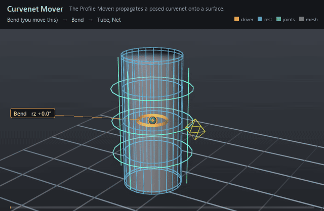

| On this page | |
| Node type | RigExecCurvenetMover |
| Example | curvenet.usda |
| Category | Curvenet |
Overview ¶

The deformer half of curvenet rigging (de Goes, Sheffler & Fleischer,
Character Articulation through Profile Curves, SIGGRAPH 2022): a net of
profile splines is articulated like any other geometry, and this mover
carries that articulation onto one mesh's points. The surface reproduces
the curves while keeping its own detail, and because the mesh is cut along
the net, each side of a curve deforms independently — a crease can fold
without dragging the other side with it. Nothing in the wiring mentions the
target's tessellation, so re-meshing the surface only re-cuts and re-binds:
no wiring changes.
The Profile Mover: propagates a rigged curvenet's articulation over one exact native UsdGeomPointBased points property (2022 paper section 4).
Binding is precomputed once per epoch against the target's authored base points -- the projection pose -- by cutting the mesh along the curvenet and factorizing the resulting cut-aware Laplacian. Each frame the mover interpolates the curvenet's per-side deformation gradients over that cut-mesh and reconstructs vertex positions, so the surface reproduces the curves while keeping its own detail, and each side of a curve deforms independently.
The surface this deforms FROM is whatever the preceding revision in the chain produced, which is exactly the paper's section 5 separation of the projection pose from the rest pose: a curvenet layers over skinning, another curvenet, or a simulation with no extra setup. The common MoverAPI envelope blends the solved surface over that incoming revision.
How it works ¶
It runs as one revision of the target's point chain, after the solve
and after every earlier revision on that chain; same-target movers are
ordered by the reverse-sibling post-order walk of <rig>/Movers, so
descendants run before their mover parent and sibling branches run
bottom-to-top in usdview (libs/rigExec/rigEvaluator.cpp:149-163, 3531-3533).
Every frame it reads the projection pose — the curvenet's points,
rigExec:splineIndices, rigExec:basis and rigExec:samplesPerSpline,
plus the target's faceVertexCounts, faceVertexIndices and points, all
at default time (libs/rigExec/moverGraph.cpp:2109-2137) — and hashes
them into a bind digest; the expensive half, cutting the mesh along the net
and factorizing the cut-aware Laplacian, is done once and cached under that
digest (libs/rigExecMath/profileMover.h:1-11,
libs/rigExec/moverGraph.cpp:2167-2199). It then reads the net's posed
points — the result of the curvenet's own mover chain, which the evaluator
guarantees has already run by recording the net's points as a dependency
edge (libs/rigExec/rigEvaluator.cpp:6821) — harmonically interpolates the
per-side deformation gradients over the cut mesh, and Poisson-reconstructs
vertex positions from the incoming point revision, which is the surface it
deforms FROM (libs/rigExec/moverGraph.cpp:830-848). The solved points are
then blended over that incoming revision by the common MoverAPI envelope
(libs/rigExec/moverGraph.cpp:888-913) and written back to the target's
points.
Wiring ¶
| Relationship | Points to | Required |
|---|---|---|
rigExec:curvenet | The RigExecCurvenet supplying the control points; the first target is the one used. Omitting it is not a compile error — the mover then fails and passes its incoming points through unchanged. | yes |
rigExec:moves | Exactly one exact native point3f[] points property — the surface this deforms. Multi-target fan-out is rejected at compile. | yes |
rigExec:weightObject | Optional weight field over the target's points, supplying the envelope instead of inputs:defaultWeight. | no |
Parameters ¶
Common mover envelope
rigExec:movesrelationship
Reserved write-set relationship: exact prim/property targets.
inputs:enabledbool, default true
Shape-preserving enable. Disabled movers pass their preceding revision through unchanged (value-only edit).
inputs:defaultWeightfloat, default 1
Normalized common mover envelope in [0, 1]. With no bound rigExec:weightObject it broadcasts over every logical element: zero passes the incoming value through bit-for-bit and one applies the mover's full-strength result.
rigExec:weightObjectrelationship
Optional compatible total weight field, at most one target. When bound, the weight object's values (including its own sparse or constant fallback) supply the common envelope instead of inputs:defaultWeight. Target, domain, and cardinality must match each mover application; an incompatible binding is a compile error. A multi-target mover may bind only a constant operation envelope whose weightTarget is the mover prim itself; that one value broadcasts to every application of the atomic mover.
Curvenet source (read from `rigExec:curvenet`)
rigExec:splineIndicesint[], default []
Four control point indices per cubic spline. For the bezier basis they are p0, h0, h1, p1, so entries 0 and 3 are the knots and the two between are tangent handles.
rigExec:basisuniform token, default "bezier"
Curve basis. "bezier" is the paper's cubic Bezier. The centripetal Catmull-Rom of the 2026 face-parametrization talk puts every control point exactly on the curve, which suits nets traced onto a surface.
rigExec:samplesPerSplineuniform int, default 5
Sampling density before the mesh-resolution scaling of section 3: the count per spline is this value times the ratio of the spline's control polygon length to the surface's mean edge length.
Node parameters
rigExec:curvenetrelationship
Exactly one RigExecCurvenet supplying the posed control points.
Example ¶
curvenet.usda
Shares the Curvenet page's stage: a profile net drawn over a
144-quad capped tube, its knots posed by ordinary rig machinery — a matrix
mover under an FK-driven joint, then a Curvenet Adjustment through the
Adjuster Mover — and ProfileMover propagating that posed net onto
Tube.points under a RigExecCurvenetWeight envelope. In the picture the
green curves are the posed net, the cyan wireframe is the rest pose
the whole thing departs from, and the small yellow diamond off the
middle ring is the RingPush knot handle. The wide swing is the bend; the
local lobe pushed out beside that diamond is one knot moved through the
Adjuster, and the surface reproducing it — with the rest of the tube left
alone — is the thing a skin cluster cannot do. The net's 76 pooled control
points are the only thing the rig names; the tube's 168 vertices appear in
no relationship anywhere — the whole point of the representation.
Open it live with:
bin\launch_usdview.bat docs\examples\curvenet.usdaRe-render the GIF above with:
python docs/render_media.py --page curvenet_moverTips ¶
Tips
- The projection pose is read at default time on both the net and the target, never at the evaluated frame: author the drawn pose as the default value and keep animation in time samples. A target whose
pointsexist only as time samples binds nothing and passes through. - Everything the cut depends on —
rigExec:basis,rigExec:samplesPerSpline,rigExec:splineIndices, the net's default points and the target's default points and topology — is hashed into the bind key, so editing any of it re-cuts the mesh and re-factorizes. Animating the net's posed points changes none of those, which is why every frame after the first is cheap. - The incoming point revision is the surface it deforms from, so a curvenet stacked after skinning, after another curvenet or over simulated points needs no extra setup — put the mover later in the chain and it layers.
See also ¶
More curvenet nodes ¶
 Curvenet
CurvenetA net of cubic profile curves that articulates a surface independently of its tessellation.
 Curvenet Adjustment
Curvenet AdjustmentA handle on one curvenet knot, posed in the deformed frame.
 Curvenet Adjuster Mover
Curvenet Adjuster MoverApplies knot and tangent controls in the frame of the already-deformed net.
 Curvenet Mover
Curvenet MoverThe Profile Mover: propagates a posed curvenet onto a surface.